来源：https://ev0ft8k60w2.feishu.cn/docx/XAgYdSyUMoghvCxdjPgcxwtEnqh
最近大家可能都从各个渠道发现了一个小风口，那就是视频号对视频号新号推流力度很大，很多人通过视频号疯狂涨粉。
我实操了两遍，大概理解了其中的原理，并且所有人都可以直接复制，快速实现涨粉。自从有幸担任了航海教练后，经常会思考RPA如何结合场景发挥作用，本文介绍如何通过 RPA 实现无人直播，实现睡后涨粉。
首先简单介绍视频号涨粉的原理及操作
要准备什么样的钩子主要跟自身领域相关，例如我是 AI 博主，那么我的钩子就是领取 AI 资料。
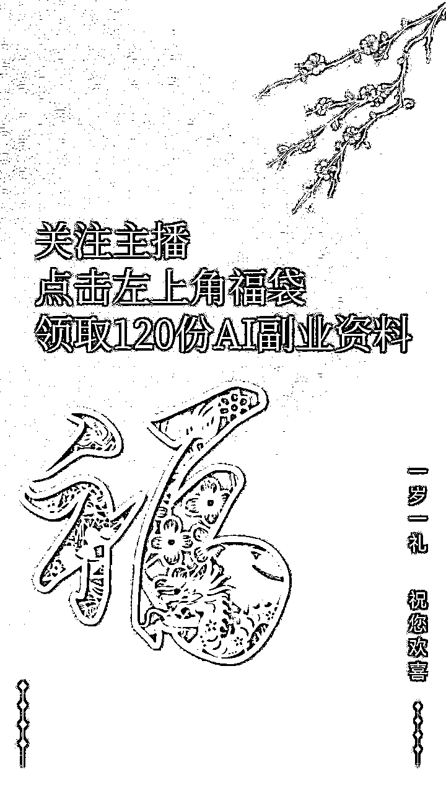
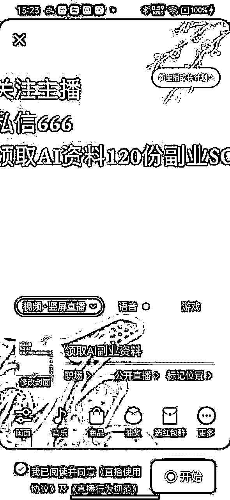
设置福袋抽奖可以大大增加与用户的互动。下文会详细介绍如何采用RPA实现自动设置福袋，实现无人直播涨粉。
设置配置可参考：
1、礼物分配选择：拼手气
2、总礼物：可自行选择（注意：是总礼物数，不是单个！！！）
3、中奖名额：1 - 5 个，看热度与在线人数。
4、开奖时间：设置 1 - 5 min
5、用户参与方式：关注主播
6、兑换并发起
经过测试，1-2分钟抽一个福袋效果是比较好的。
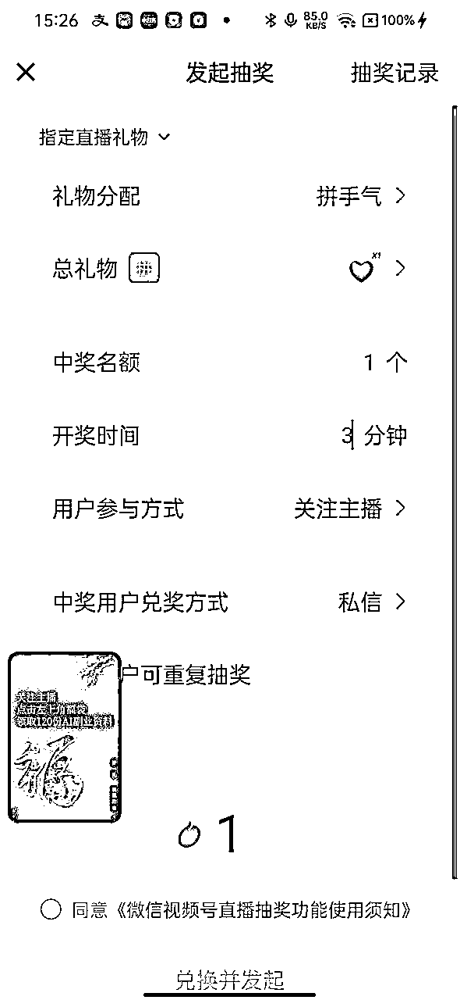
数据 = 点亮灯牌 + 刷礼物 + 评论 + 引导评论关注点灯牌 + 全平台转发直播间 + 停留时长等
可以加入一些互助群一起做数据。
开播后，可发到群里，发个红包，互相上灯牌+点赞+停留 3 - 5 分钟，这样可以让视频号更好地推流。
同时，新号记得用一下官方送的流量券。
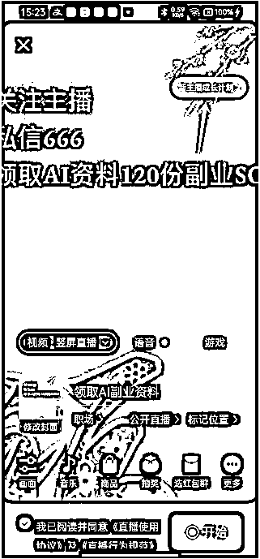
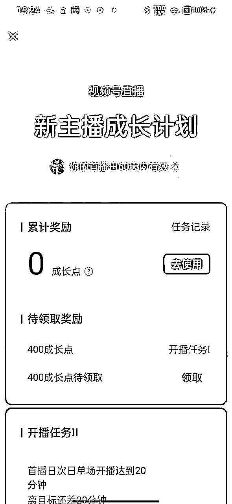
接下来详细介绍怎么用 7 行 RPA 代码实现无人设置福袋，非常简单，有手就能操作。
这一步需要手动操作，在手机上创建好视频号直播内容，并点击开始。同时手动设置好福袋抽奖规则。例如：
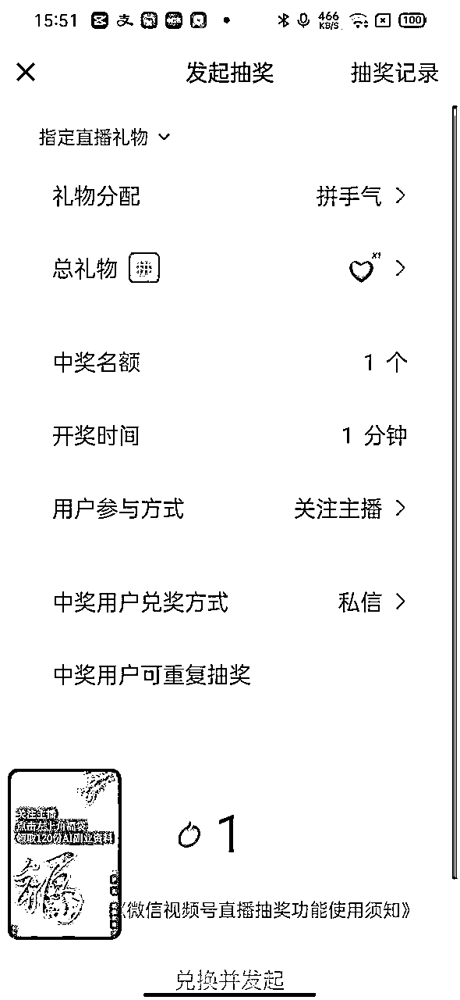
打开影刀的【手机管理器】，连接好手机。
要求安卓手机，打开USB调试，部分手机需要打开禁止权限监控
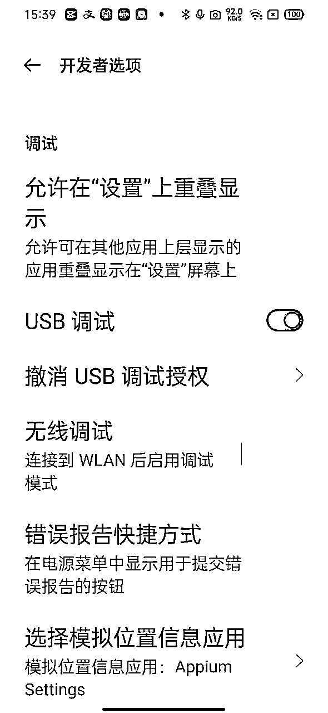
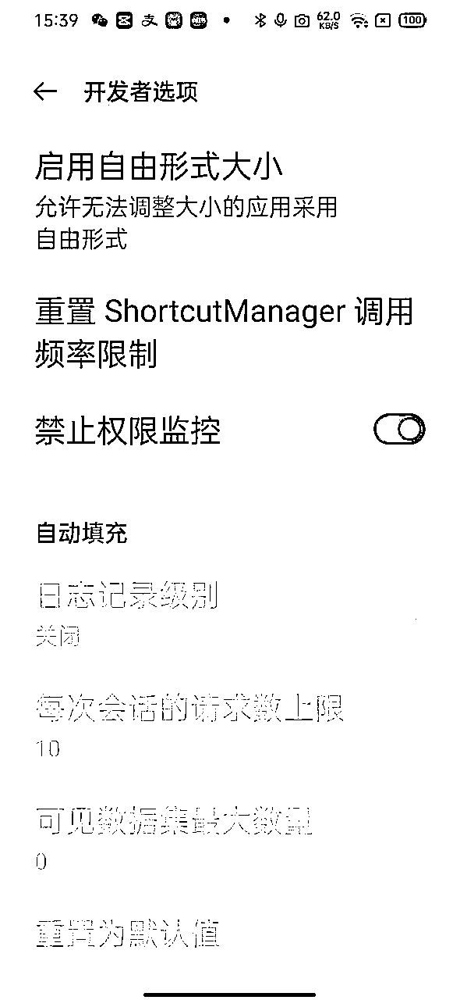
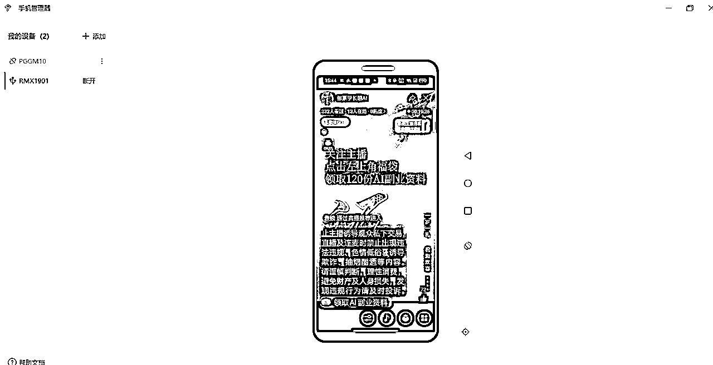
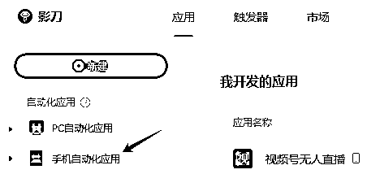
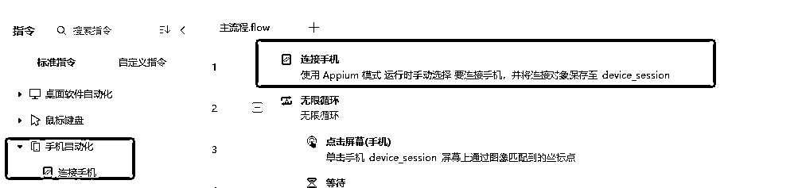
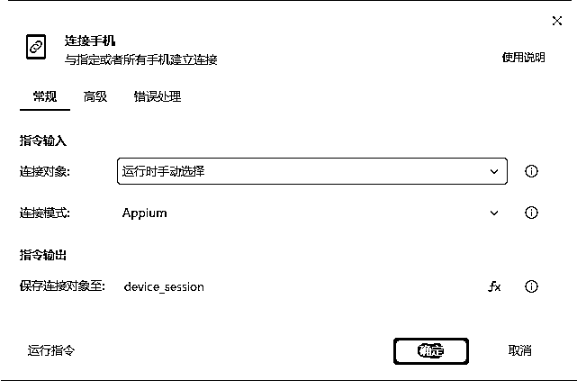
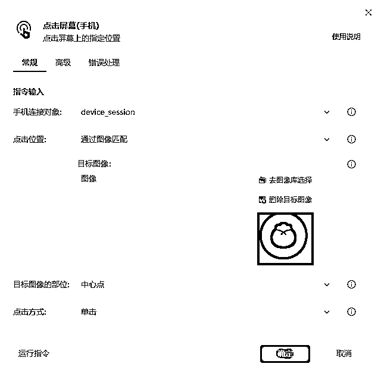
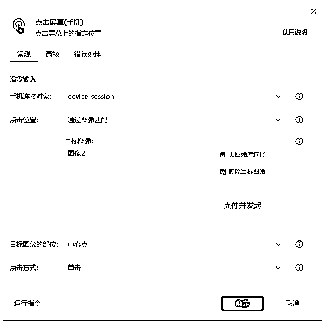
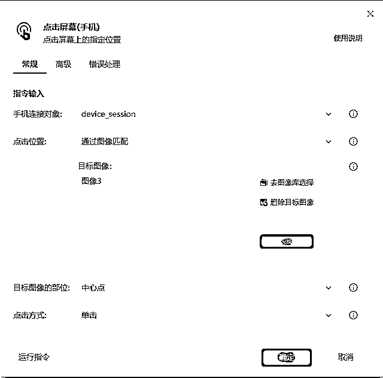
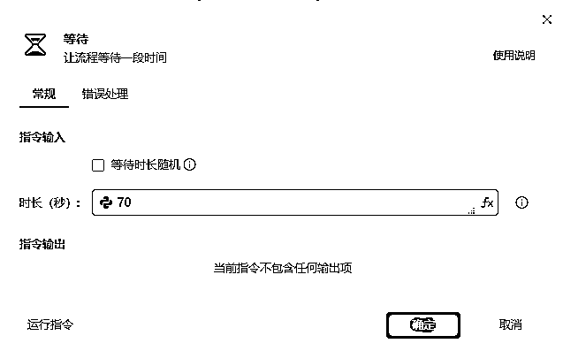
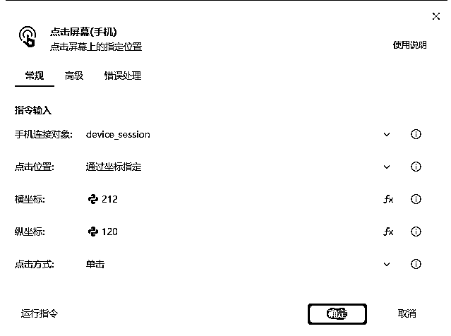
坐标可以在手机管理器中用鼠标移动获取。
以上就是RPA自动设置福袋抽奖全过程，看看视频操作。
最后附上影刀操作全流程。
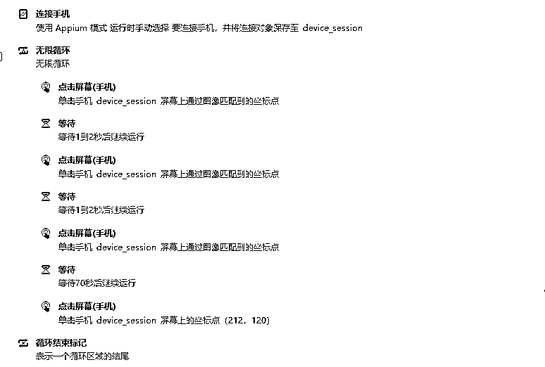
最后，如果有疑问，欢迎提问。